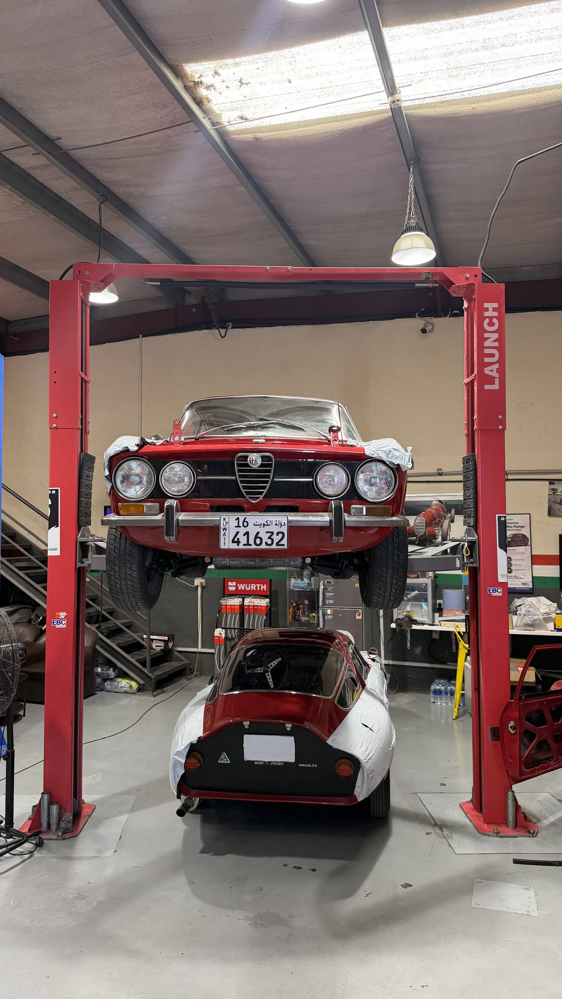
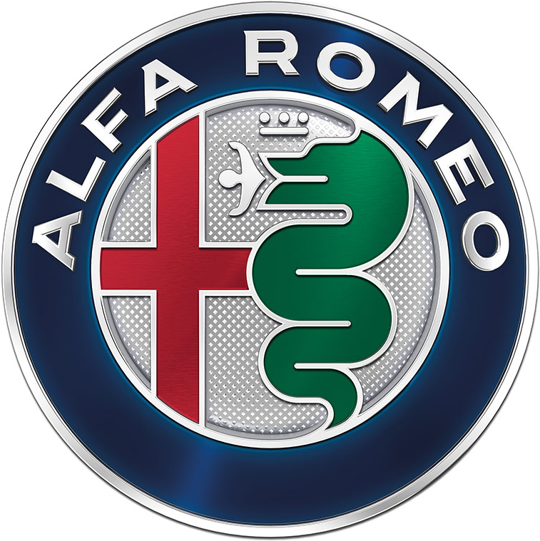
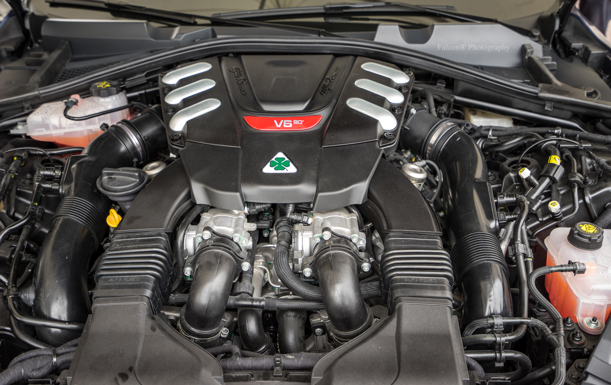

Insights
From the workshop.
Practical knowledge for Alfa Romeo owners in Dubai and the UAE — from servicing and diagnostics to engine work and what to expect from a specialist garage.

Alfa Romeo Engine Rebuild in Dubai: What Owners Should Know
An engine rebuild is one of the most complex jobs an Alfa Romeo can go through. Here's what the process looks like, what to expect, and why the workshop you choose matters more than you might think.
Read More

Alfa Romeo Giulia and Stelvio Servicing in Dubai: The Complete Owner's Guide
Service intervals, what's included at each stage, transparent pricing, and why the UAE climate makes sticking to the schedule non-negotiable for the 2.0 TBI engine.
Read More

Alfa Romeo Specialist vs. Dealership in Dubai: What Owners Need to Know
The dealership isn't always the right choice. Here's what a genuine Alfa Romeo specialist in Dubai does differently — and when it actually matters for your car.
Read More

Alfa Romeo Quadrifoglio Servicing in Dubai: Everything V6 Owners Should Know
The 2.9 V6 Biturbo has specific service requirements beyond the standard Giulia and Stelvio. Full schedule, pricing, common issues, and why this car demands a specialist.
Read More